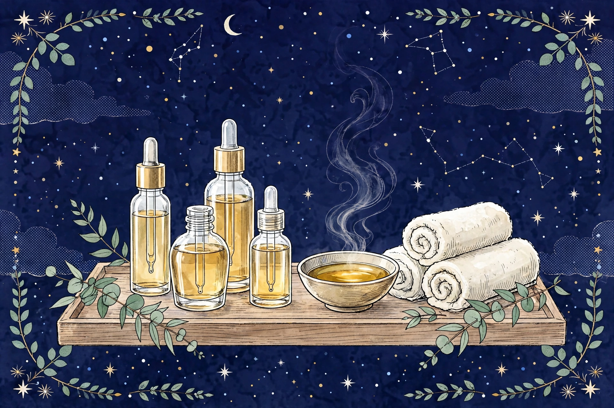

アロマオイルの選び方｜ラベンダー・ゼラニウムなど香りの系統から考えるアロマ

アロマセラピストの資格を持つ施術者が、精油の香りの系統と選び方の考え方を紹介します。効能をうたうものではなく、「その日の気分に合う香り」を見つけるためのガイドです。
#アロマオイル 選び方#精油 リラックス#ラベンダー ゼラニウム#香り リラックス#アロマ マッサージ
香りは「系統」で捉えると選びやすい
精油の香りは、大きくフローラル系、ハーブ系、柑橘系、ウッディ系などに分けて考えると選びやすくなります。ラベンダーはフローラルとハーブの中間のような、すっきりと穏やかな香り。ゼラニウムはバラに似た華やかさに草の青さが混ざる香りで、女性に人気があります。
柑橘系のベルガモットやオレンジは軽やかで親しみやすく、サンダルウッドのようなウッディ系は落ち着いた深さがあります。「今日は軽く過ごしたい」「静かに沈みたい」といった、その日の気分から逆引きするのが選び方のコツです。
サロンで香りを使う理由
当店のオイルマッサージでは、香りのあるオイルを使います。香りは嗅覚を通じて気持ちの切り替えに働きかけるとされ、施術の時間そのものを「日常から離れる時間」として感じていただくための大切な要素です。
苦手な香りがある方、妊娠中の方、香りに敏感な方は、無香料や弱めの香りへの変更もできます。精油は原液を直接肌につけるものではないため、ご自宅ではキャリアオイルで薄めるなど、使い方の注意も守って楽しんでください。
自宅で楽しむときの基本
ご自宅では、湯船に精油をそのまま入れるのではなく、バスソルトやキャリアオイルに混ぜてから使う方法が一般的です。アロマストーンやティッシュに1滴落として枕元に置く方法は、手軽に取り入れられます。
香りの感じ方には個人差があり、「この香りでなければならない」という絶対の正解はありません。当店でも施術前に香りの好みをうかがい、その日の体調と合わせて選んでいます。
関連するお悩みページ
関連する経絡ページ
さらに学びたい方へ：現場で使われる専門書（PR）
このページのテーマに合わせて選んだ本と、当店の施術でも参考にしている専門書です。


※本ブロックのリンクはAmazonアソシエイト・プログラムおよび楽天アフィリエイトによる広告リンクです。使用感の保証をするものではありません。